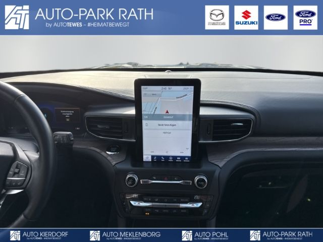

Ford Explorer Platinum 3,0l PHEV,PANO*AHK*CAM*B&O
43380 PLN
Düsseldorf
52.746 km
- Getriebe: Automatik
- Technik: Allrad, Bordcomputer, Schaltwippen, Digitales Kombiinstrument
- Assistenten: Totwinkelassistent, Müdigkeitserkennung, Verkehrszeichenerkennung, Parklenkassistent, Regensensor, Lichtsensor, Notbremsassistent, Berganfahrassistent, Spurhalteassistent, Ausparkassistent, Abstands-/Kollisionswarner, Spurwechselassistent, Abstandsregeltempomat
- Komfort: Klimaanlage, Klimaautomatik, Servolenkung, Zentralverriegelung, Elektr. Fensterheber, Lederausstattung, Sitzheizung, Elektr. Außenspiegel, Teilbare Rücksitzlehne, Park Distance Control, Multifunktionslenkrad, Keyless Go, Elektr. Sitze, Autom. abblend. Innenspiegel, Mittelarmlehne, Innenraumfilter, Einstellbare Lenksäule, Sportsitze, Park Distance Control vo.&hi., Elektr. Heckklappe, Beheizbare Frontscheibe, Klimasitze, Keyless Entry, Memory Sitze, Ambientebeleuchtung, Lordosenstütze, Lederlenkrad, Sitzheizung hinten, Geschwindigkeitsbegrenzer, Klimaautomatik-2-Zonen, Funkfernbedienung
- Sicht: Nebelscheinwerfer, Beheizbare Außenspiegel, LED-Hauptscheinwerfer, LED-Rückleuchten, Rückfahrkamera, LED-Tagfahrlicht, Dynamisches Kurvenlicht, Tagfahrlicht, Privacyverglasung, Blendfreies Fernlicht
- Sicherheit: ABS, Airbag, Beifahrerairbag, Wegfahrsperre, Seitenairbags, Alarmanlage, ESP, Reifendruckkontrolle, Traktionskontrolle, Kopfairbag, ISOFIX Kindersitzbefestigung, Anhängerstabilisierung, Notrufsystem
- Entertainment: Navigationssystem, Soundsystem, Telefonvorbereitung, USB-Anschluss, MP3, Bang und Olufsen, Bluetooth, Freisprecheinrichtung, Apple CarPlay, Android Auto, Sprachsteuerung, DAB, Touchscreen, Induktionsladen
- Qualität: Scheckheftgepflegt, Nichtraucherfahrzeug
- Sonstiges: Schiebedach, Anhängerkupplung, Metallic, Alufelgen, Dachreling, Gepäckraumabdeckung, Elektr. Panoramadach, Abnehmbare Anhängerkupplung, Sportfahrwerk, Elektrische Parkbremse, Lenkradheizung, Sommerreifen, Reserverad, Winterpaket
... Änderungen, Zwischenverkauf und Irrtümer vorbehalten.
quality by dotzilla
